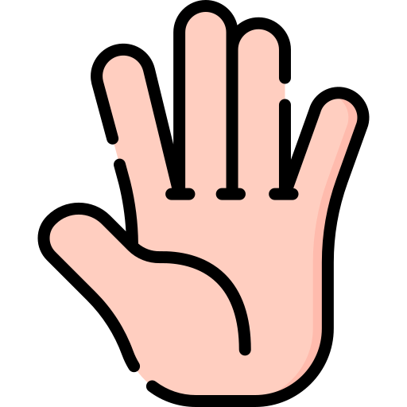
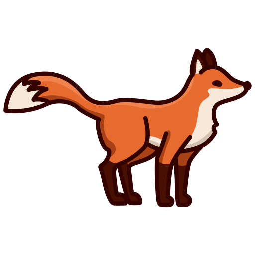

Generalidades
- Morfología quechua
La familia quechua muestra una morfología esencialmente aglutinante y, salvo algún desarrollo muy particular, exclusivamente sufijadora (Adelaar y Muysken 2004). Una palabra quechua está formada necesariamente por una raíz con o sin sufijos, dependiendo del tipo de raíz del que se trate, donde los sufijos pueden clasificarse como derivativos, flexivos e independientes de acuerdo con una posición fija en la estructura de la palabra y con el tipo de relaciones que establecen (Cerrón–Palomino 2003). El siguiente cuadro , basado en Cerrón–Palomino (2003), muestra este orden lineal de los elementos de la palabra:
- Variantes del quechua Huanca
-
La variedad de quechua hablada en el Valle del Mantaro se conforma por tres variedades. Estos tres son:
- Huaylla - Huanca
- Huaycha - Huanca
- Shausha - Huanca
Estas variantes se hablan en los territorios correspondientes a las provincias de Huancayo, Concepción y Jauja, respectivamente.

Fonológicamente, las variedades Huaylla y Huaycha han cambiado el fonema protoquechua /q/ a una oclusiva glotal [ʔ], la misma que ha desaparecido por completo en posición inicial de palabra; en variedad jaujina, por el contrario, dicho protofonema se ha "suavizado", articulándosele como una fricativa glotal, es decir [h]
Proto - Huanca
/q/Huaylla y Huaycha
/q/ > [Ø ~ ʔ]Shausha
/q/ > [h ~ x]Glosa /qaya-y/ [aya-y] [haya-y] llamar /qiru/ [ilu] [hilu] tronco /qućha/ [ućha] [hućha] laguna /maqa-y/ [maʔa-y] [maha-y] golpear /wiqi/ [wiʔi] [wihi] lágrima /śhuqu-y/ [śhuʔu-y] [śhuhu-y] sorber /sinqa/ [sinʔa] [sinha] nariz
Abecedario - Achahala / Achawaya
- Vocales
- a
- i
- u
- Vocales alargadas
- aa
- aala - maguey
- ii
- iira - era
- uu
- uuli - plástico
- Abecedario - Achahala / achawaya
- A (a)
- anka - gabilán
- CH (cha)
- chuqllu - maíz
- ĆH (ćha) - Consonante retrofleja
- ćhićhu - gestante

- H (ha)
- hiwlla - gaviota
- I
- inchu - picaflor, colibri
- K (ka)
- kulluśh - perdiz
- L (la)
- laćhkay - burilar
- LL (lla)
- llama
- M (ma)
- mishikuna - gatos
- N (na)
- nuna - persona, nunakuna -personas
- Ñ (ña)
- ñawi - ojos, ñawikuna - ojos
- P (pa)
- pillpintu - mariposa
- Q (la q es muda, puede alargar )
- qućha - laguna
- R (ra)
- rakacha - tuberculo de selva
- S (sa)
- sipla - pelado, calvo
- SH (sha)
- shimi - boca
- ŚH (śha) - Consonante retrofleja
- śhukśhu - palo para hilar
- T (ta)
- talwish - tarhui
- U
- ukuśh
- W (wa)
- waćhuku / waćhaku - faja
- Y (ya)
- yanta - leña
Los Números - yupaykuna
-
Numerales del uno al diez
- Cero - walla
-
Huk - uno, suk en Jauja
- Huk wasi - una casa
🏠
- huk wallpa - una gallina
🐓
- huk mishi - un gato
🐈
Ishkay - dos
- ishkay challwa - dos pescados
🐟 🐟
; - ishkay akaśh - dos cuyes
- ishkay akśhu - dos papas
🥔 🥔
Kimsa - tres
- kimsa waaka - tres vacas
- kimsa inchu - tres picaflores
Tawa - cuatro, ćhusku en el Huaycha Huanca
- tawa chuspi - cuatro moscas
🪰 🐟
Pichqa - cinco
- pichqa allqu - cinco perros
Suqta - seis
- suqta lumi - seis piedras
Qanćhis - siete
- qanćhis wishla - siete cucharones
Pusaq - ocho
- pusaq mućhka
Isqun - nueve
- isqun aśhnu
ćhunka - diez
- ćhunka utulu - diez gallos
-
Numerales superiores a diez
- A partir del número 11 en adelante se usa el sufijo posesor YUQ / NIYUQ
- 11 - ćhunka hukniyuq (kuk + niyuq)
- 12 - ćhunka ishkayniyuq (ishay + niyuq)
- 13 - ćhunka kimsayuq (kimsa + yuq)
- 14 - ćhunka tawayuq (tawa + yuq)
- 15 - ćhunka pichqayuq (pichqa + yuq)
- 16 - ćhunka suqtayuq (suqta + yuq)
- 17 - ćhunka qanćhishniyuq (qanćhish + niyuq)
- 18 - ćhunka pusaqniyuq (pusaq + niyuq)
- 19 - ćhunka isqunniyuq (isqun + niyuq)
- 20 - ishkay ćhunka
- 30 - kimsa ćhunka
- 40 - tawa ćhunka
- 41 - tawa ćhunka hukniyuq
- 42 - tawa ćhunka ishkayniyuq
- 50 - pichqa ćhunka
- 60 - suqta ćhunka
- 70 - qanćhish ćhunka
- 80 - pusaq ćhunka
- 90 - isqun ćhunka
- 100 - paćhak
- 179 - paćhak qanćhish ćhunka isqunniyuq
- 1,000 - walanka
- 2021 - ishkay walanka ishkay ćhunka hukniyuq
- 10,000 - hunu
Precisiones gramaticales
Los numerales puede entrar en construcción con las demás clases de nombres dentro de una frase nominal; así por ejemplo:
ishkay chaka - dos puentes
tawa chuklla - cuatro chozas
y adviértase que el núcleo (es decir el sustantivo) no necesita del sufijo plural (kuna), puesto que la pluralidad está ya indicada instrinsecamente en el numeral; pero cuando entre el numeral y el núcleo se intercala uno o más modificadores es obligatoria dicha marca; por ejemplo:
ishkay mawka chakakuna - dos puentes viejos
tawa chiyap taksha chukllakuna - cuatro chozas muy pequeñas
Saludos - Mishki limaykuna
- Allinllachu - hola
- Allin muyun - buenos días (saludo para todo el día)
- ¿Imanuyllam kayalkanki? - ¿Cómo están?
- Imanuyllam - hola, ¡imanuyllam! - ¡qué tal!, ¿imanuyllam? - ¿cómo estás?
- Limaykullak - hola
- Allinllam - hola, allinllam - bien
- Ćhaskikullak - hola como respuesta
- hamallaa - hasta luego, chao de manera afectuosa
- tinkunanchikkama - hasta la próxima
- buenos días - allin waalalla kallaachun
- Allin waalalla kallaachun walaśhkuna - buenos días jovenes
- Allin waalalla kallaachun wamlakuna - buenos días señoritas
- Allin waalalla kallaachun taytallakuna - buenos días señores
- Allin waalalla kallaachun mamallakuna - buenos días señoras
- Allin waalalla kallaachun urukuna - buenos días niños
- Allin waalalla llapallaykichikpaq - buenos días para todos
- allin muyunlla kallaachun - te auguro un buen día
- allin tutalla kallaachun - buenas noches
La familia - Ayllu
 awilu - abuelo
awilu - abuelo  awila - abuela
awila - abuela mama - mamá / mamacha - mamita
mama - mamá / mamacha - mamita- tayta - papá / taytacha - papito
- wayapa - esposo, varon hombre adulto
- walmi - esposa
wawi - hijo(a) de la mujer / esposa (la esposa tiene wawi)
wamla (walmi) wawi - hija de la esposa
walaśh wawi - hijo de la esposachuli - hijo (a) del varón / esposo (el varón tiene chuli)
wamla (walmi) chuli - hija de varon
walaśh chuli - hijo de varón- pani - hermana del varón (cuñada)
- ñaña - hermana de la mujer (cuñada)
- tuli - hermano de la mujer (cuñado)
- wawki - hermano del varón (entre varones)
willka - nieto(a)
walmi willka - nieta
walaśh willka - nieto- wamla akapakuna - niñas
- walaśh akapakuna - niños
- wamla - señorita
- walaśh - joven varón
- awkish - viejo, anciano
- chakwaśh - vieja, anciana
- chullaśha - viudo, viuda
- nuna - gente
- ñuñu pawaq - último hijo o hija
Partes del cuerpo humano - Aychanchikpa śhutinkuna
 uma - cabeza
uma - cabeza  pata - barriga
pata - barriga  chaki - pierna
chaki - pierna  willpa - labio
willpa - labio - kunka - cuello
 ñawi - ojo
ñawi - ojo - linli - oreja
 ulku, paaćha - frente
ulku, paaćha - frente  aacha - cabello
aacha - cabello  uya - cara
uya - cara  shimi - boca
shimi - boca - quijada - kakichu
- kućhus - codo
 likla - brazo
likla - brazo pupu - ombligo
pupu - ombligo- clavícula - usa kanćha
- nuca - kukuti
 waśha tullu - columna vertebral
waśha tullu - columna vertebral liklashku - axila
liklashku - axila waata - costilla
waata - costilla- waśha - espalda
- wiyaw - cintura
-  maki - mano
 rukana - dedo
rukana - dedo maki palta - palma de la mano
maki palta - palma de la mano uña - shillu
uña - shillu - uña de la mano - maki shillu
 rodilla - uul, unqul
rodilla - uul, unqul - articulación - muqu
 ćhaki - pie
ćhaki - pie - piel - karan
 planta del pie - ćhaki palta
planta del pie - ćhaki palta - talón - anku
 diente - kilu
diente - kilu - lengua - hallu
 intestino - chunchull
intestino - chunchull  estómago - pata
estómago - pata - fosas nasales - sinqa ućhku
- faringe - tunkuri
- pulmón - puywan
- tráquea - tunkuśh
- trompas de falopio - wawi muhu pulinan
- ovario - wawi muhu milachiq
- óvulo - wawi muhu
- útero - wawi lunku
- vagina - laka
- seño - ñuñu, chuchu
- vejiga - ishpay pukuchu
- escroto - luntu lunku
- pene - lani
- tésticulo - luntu
- tetilla - chichi
 hueso - tullu
hueso - tullu - corazón - śhunqu, śhuu
- riñon - lulun
- sangre - yawar, ñawar
- moco - ñuti
- visícula bilial - qayan
- lágrima - wiqi
- hígado - ñati
- cerumen - linli wila
- pupila - ñawi lulu
 cráneo - uma tullu
cráneo - uma tullu  esqueleto - nuna tullu
esqueleto - nuna tullu
Los colores - limpikuna
 yana - negro
yana - negro puka - rojo
puka - rojo- yulaa - blanco
 ankash - azul
ankash - azul tunuśh - amarillo
tunuśh - amarillo wirdi - verde
wirdi - verde  uwi - plomo
uwi - plomo- yana ankash - azul oscuro
- amya anhas - celeste
- uwi untay - gris humo
- amya tunuśh - crema
- yana puka - guindo
- chiwanway - anaranjado
- rusasiika - rosado
- kulli - morado
- allpa limpi - marrón
- alwaśh - amarillento
- illaynilaa - plateado
- uurunilaa - dorado
- ućhpaśh - color ceniza
Animales - uywakuna
 challwa - trucha
challwa - trucha lacha - sapo
lacha - sapo hampatu - rana
hampatu - rana ulltu - renacuajo
ulltu - renacuajo llama - llama
llama - llama- wikuña - vicuña
- paku - alpaca
- wanaku - huanaco
 waaka - vaca
waaka - vaca tuuru - toro
tuuru - toro- uña - becerro
 kawallu - caballo
kawallu - caballo- mula - mula
 ćhina kawallu - yegua
ćhina kawallu - yegua aśhnu - burro
aśhnu - burro kapish - cabra
kapish - cabra uwish - oveja
uwish - oveja allqu - perro
allqu - perro mishi - gato
mishi - gato kunish - conejo
kunish - conejo ukumaali - oso
ukumaali - oso-  atuq - zorro
- puma - puma
- luychu - venado
- añaśh - zorrillo
- kala ćhupa - muca (carachupa)
- wiskacha - vizcacha
- unchuchukuy - comadreja
 ukuśh - ratón
ukuśh - ratón hatun ukuśh - rata
hatun ukuśh - rata- uśhu mishi - gato montes
 paatu, utaćhaki - pato
paatu, utaćhaki - pato wallpa - gallina
wallpa - gallina utulu - gallo
utulu - gallo chipchi, chiwchi - pollito
chipchi, chiwchi - pollito kuntur - cóndor
kuntur - cóndor- anka - gavilán
- killish - cernícalo
- waman - halcón
 tuku- búho
tuku- búho- yakyaka - lechuza
- akakllu - pájaro pito
- wachwa - ganzo andino
- pariwana - flamengo
- kulluśh - perdiz
 ulpay - paloma
ulpay - paloma- chiwaku - zorzal
- inchu - picaflor
- uritu - loro
- tuyaśh - calandrina
- pichiwsa - gorrión
- maśhu - murcielago
Insectos - kulukuna
 kuyuku - lombriz
kuyuku - lombriz- paćhak ćhaki - cien pies
 pillpintu - mariposa
pillpintu - mariposa chikish - hormiga
chikish - hormiga- wanwaśh - moscardón
 waylish - avispa
waylish - avispa kaćhikaćhi - libélula
kaćhikaćhi - libélula- inchipala - luciérnaga
 mishki tanra - abeja
mishki tanra - abeja añaaru - araña
añaaru - araña- mulu kata - mariquita
 rapachu - zancudo
rapachu - zancudo- yulaa kata - manta blanca
 chuklluśh - grillo
chuklluśh - grillo chilliku - saltamonte
chilliku - saltamonte ismay kunti - escarabajo
ismay kunti - escarabajo chullu - caracol
chullu - caracol
Alimentos
- shita - yuyo
 ripuyllu - col
ripuyllu - col- haćha kulish - col nativa
- uchu - rocoto
 lichuka - lechuga
lichuka - lechuga kulanćhu - culantro
kulanćhu - culantro- pirihil - perejil
 hala - maíz
hala - maíz- chuullu - choclo
 alwish - arveja
alwish - arveja yunya - frejol
yunya - frejol aawaśh - habas
aawaśh - habas- talwi - chocho
- kinwa - quinua
 siwara - cebada
siwara - cebada riigu - trigo
riigu - trigo ahus - ajos
ahus - ajos uryaanu - orégano
uryaanu - orégano- ↓ Allpa lulinćhu wayuykuna - tubérculos
- kulaw - papa nativa
 akśhu - papa
akśhu - papa- llullu akśhu - papa nueva
- yulaa aśhu - papa blanca
- luntuśh akśhu - papa amarilla
- kallwa akśhu - papa alargada
- maćhka akśhu - papa arenosa
- shili akśhu - papa de chuño
- mishki akśhu - camote
- shakapa - yacón
- yuka - yuca
- maka - maca
- uwa - oca
- maśhwa - mashua
- ulluku - olluco
- rakacha, laaćhu - arracacha
- sanurya - zanahoria
 ↓ Frutas - Haćhakunapa mishki wayuyninkuna
↓ Frutas - Haćhakunapa mishki wayuyninkuna  ruuta - plátano
ruuta - plátano- pulupulu - granadilla
- paqay - pacay
- lukma - lúcuma
 palta - palta
palta - palta chirimuy - chirimoya
chirimuy - chirimoya- tuunaśh - tuna
- tumwu - granadilla silvestre
- kapuli - aguaymanto
- shankay - cactus
- maatu - variedad de guayaba
- śhawintu - guayaba
- alakanćha - silata
 ↓ carnes - aychakuna
↓ carnes - aychakuna  aycha - carne
aycha - carne- waaka aycha - carne de res
- kuchi aycha - carne de cerdo
- uwish aycha - carne de carnero
- akaśh aycha - carne de cuy
- wallpa aycha - carne de gallina
- kuchipa uman - cabeza de chancho
- uwishpa uman - cabeza de carnero
- uwishpa śhunqun - corazón de carnero
- kuchipa yawarnin - sanger de chancho
- wila - grasa
- chalwa aycha - carne de trucha
- comida de casa - Wasi mikuykuna
- uman caldo - caldo de cabeza
- yaku ćhupi - sopa verde
- patachi - sopa de trigo
- ulluku ćhupi - sopa de olluco
- siplaśha hala - maíz pelado
- tamal - tamal
- muti - mote
- akśhu ankay - papa frita
- wayta - pachamanca
- challwa kanka - trucha frita
- wallpa kaldu - caldo de gallina
- akaśh kanka - cuy chaktado
- Los sabores - Shimi malliy musyay
- allí aśhnakaćha - oloroso, fragancioso
- puchuśha, unćhiśha - avinagrado
- amya - insípido
- kaćhiisha, kaćhisapa - salado
- puchuu - ácido, agrio
- ćhakćhaa - amargo
- asyaa - maloliente
- ayaa, uchusapa - picante
- aśhnaa - apestoso
- mishki - dulce
- miskisapa - muy dulce
Plantas
- plantas medicinales - Hampi haćhakuna, allin qulakuna
- ruda - ruda
- yawar śhunqu - chupa sangre
- wirwina - verbena
- chikurya - achicoria
- amaśh - paico
- matiku - matico
- tullma-tullma - suelda suelda
- maśhwayllu - mastuerso
- aćhawśhu - ortiga
- yulaa aćhawśhu - ortiga blanca
- yana aćhawśhu - ortiga negra
- wamanlipa - huamanrripa
- mana yupa - enrredadera
- kawallup ćhupan - cola de caballo
- puchiska, shillku - amor seco
- rumiru - romero
- ismuśh - monca
- pacha muña - muña de la puna
- anish - anís
 Árboles - Hatun haćhakuna
Árboles - Hatun haćhakuna - kaliptu - eucalipto
- kiswar - quishuar
- lamlaśh - aliso
- pillku - pilco
- layan - sauco
- ritama - retama
- piita - álamo
- chawal - agave lechuguilla
- pinka - penca
 Partes de una planta - Haćhapa lakiyninkuna
Partes de una planta - Haćhapa lakiyninkuna  lapi - hoja
lapi - hoja wayu - fruto
wayu - fruto wayta - flor
wayta - flor pisi - raíz
pisi - raíz ilun - tallo
ilun - tallo- Flores - waytakuna
- rusas wayta - rosas
- lawil wayta - clavel
- panti wayta - dalia
- alili wayta - alelí
- llama wayta - flor de llama
- hirasul wayta - girasol
- ritama wayta - flor de retama
- limalima wayta - lima lima
- sarsillu wayta - fucsia
- hantu wayta - cantuta
- chapla wayta - azucena
- aya wayta - geranio
- malkaśh wayta - margarita
Prendas de vestir - Atalankuna
- Vestimenta de mujer - Walmipa atalankuna
- wikuña chuku - sombrero de vicuña
- lliklla - mantilla
- luusa - blusa
- chumpa - chompa
- kata - manta
- kutun - coton
- kutuncha - mini coton
- waćhaku - faja
- hustan - fustan
- wayta wallin - pollera bordado
- hanapa - mil rayas
- lulipa - falda interno
- makitu - maquito
- Vestimenta de varón - Walaśhpa atalankuna
- chuku - sombrero
- tirnu - saco
- ishtira chuku - sombrero de paja
- kamisa - camisa
- chullu - gorro de lana
- punchu - poncho
- wanka chaliku - chaleco wanka
- śhukuy - ojota
Partes de la casa - Wasipa lakiyninkuna
- wasi - casa
- pila - pared
- punku - puerta
- ućhku likana - ventana
- ata - techo
- yanuna wasi - cocina
- objetos de cocina
- malay - batan
- tunay - piedra ovalada para moler
- mućhka - mortero
- tika - adobe
- tiha - teja
- manka - olla
- allpa manka - olla de barro
- hiiru manka - olla de metal
- pirul - perol
- winaku - recipiente
- kasirula - cacerola, sartén
- wisha - cucharón
- mati - plato
- mikuna - cuchara
- upyana - taza, vaso
- kaćhiputu - salero
- mishkiputu - azzucarero
- kallana - tiesto
- kanaśhta - canasta
- shuyshuna - colador
- kuchuna - cuchillo
- yamta - leña
- ulpu, laki - cántaro
- pichaku - escoba
- mikuna wasi - comedor
- puñuna - dormitorio
- ñawichana wasi - lugar de lectura
- mikuy ćhulana - almacén de alimentos
- ishpana wasi - baño
- patiyu - patio
- paakuna - lavadero
- taaśhana - lavadero de ropa
- atala walkana - tendedero
- walkaku - colgador
- kanćha - corral
- wayta wirta - jardín
- wirta - huerto
- akaśh wasi - galpón de cuyes
- wallpa wasi - gallineros
- kuchi wasi - porqueriza
- amu chapina - basurero
- sawan - zaguán
- chakana - travezaño
- tapya - tapia
- uśha wasi, chuklla - choza
- tika - adobe
- tiha - teja
- wanu - guano
- waaka wanu - abono de vaca
- llama wanu - abono de llama
- uwish wanu - abono de oveja
- akaśh wanu - abono de cuy
- lulakunapaq allin - herramientas
- pichaku - escoba
- ishipina - escalera
- yamta - leña
- ćhaki taklla - herramienta para voltear la tierra
- aradu, taklla - arado
- lluuqu - yugo
- machiti - machete
- kuuśha - hoz
- haacha - hacha
- waska - soga
- piku - pico
- kallachu - pico de dos puntas
- paala - lampón
- tupuna - balanza, romana
- martillu - martillo
- alikati - alicate
- puchka - hilado
- śhukśhu - huso
- millwakuna - lanas
- kulul - ovillo
- atku - algodón
- llama millwa - lana de llama
- paku millwa - lana de alpaca
- wikuña millwa - lana de vicuña
- uwish millwa - lana de oveja
Danzas
- unay waylaśh - huaylas antiguo
- muśhuq waylaśh - huaylas moderno
- shapi tuśhuy - los shapis
- wakun tuśhuy - huaconada
- chunkinara - chonguinada
- tunantara - tunantada
Naturaleza
- inti - sol
- killa - luna
- nina - fuego, candela
- wawya, waywa - viento
- kuyllur - estrella
- mayu - rio
- qućha - laguna
- tamya -lluvia
- yaku - agua
- śhulli - rocío
- lasu - nevado(a)
- apu - montaña sagrada
Dias de la semana, Meses del año, estaciones del año
- Meses del año
- allayku killa - enero
- tamya killa - febrero
- puuy killa - marzo
- mikuy killa - abril
- muhuy killa - mayo
- ninakilla - junio
- uyya - julio
- waywakilla - agosto
- waytakilla - setiembre
- talpuykilla - octubre
- ayakilla - noviembre
- paway killa - diciembre
- Los días de la semana
- killa muyun - lunes
- apu muyun - martes
- uyllur muyun - miércoles
- illapa muyun - jueves
- chaska muyun - viernes
- turumanya muyun - sábado
- inti muyn - domingo
- Estaciones del año
- ćhilaw mita - invierno
- lupay mita - verano
- chaki mita - otoño
- wayta mita - primavera
- El tiempo
tuta - tuta - madrugada
aspi - aspi - alba
wallpa waqay - canto del gallo (waqay: llorar, cantar, hacer música, tocar
huk wallpa waqay = ćhawpi tuta - media noche
ishkay wallpa waqay - 1 am
kimsa wallpa waqay - 2 am
tawa wallpa waqay - 3 am
pichqa wallpa waqay - 4 am
pishqu waqay - 5 am
waala - mañana (la primera parte del día)
waala mikuy - desayuno
llapakuy qallaykuy - inicio del trabajo
mishkipay - 9:30 - 10:00 am
ćhawpi muyun / ćhawpi inti / mirinday / milkapa mikuy / mikupakuy / ćhawpi pun - medio día
wayrapay - 2:30 - 3:00 3:30 pm (wayra / wawya - viento, rápido, veloz)
hamapaykuy - 5 pm
kishkishyay / kishkish waqay - 5:30 pm (kishkish - cigarra)
aspykuy - 6:00 pm
tutaykuy / tuta mikuy - 6:30 - 7:00 pm
puñukuy - 7 pm
ćhawpi tuta - media noche
mishkipayćhaw ¿imaktam lulanki? - entre las 09:30 am - 10:00 am, ¿qué haces?
yaqa mishkipayćhaw akhuktam taqtaa - yo entre las 09:30 am - 10:00 am cultivo la papaćhawpi muyunćhuy ¿imaktam lulapaakunki? - al medio día, ¿qué hacen?
ćhawpi muyunćhuy kuchiktam michipaakuu - a medio día pastamos los cerdos¿imaktam ćhawpi intićhu lulapaakunki? - ¿qué realizan en el medio día?
yaqakuna ćhawpi intićhu mikupaakuumi - nosotros comemos al medio día¿hayka pacham? - ¿cuánto tiempo es?, ¿a que hora es?
pishqu waqay pacham - a las 05:00 am (los gallos cantan)¿Imay uuram?, ¿Imay uuram kayan? - ¿Cuándo hora es?, ¿A qué hora es? (uura: refonologización de hora)
achikpay pacha - madrugada
waala pacha - mañana
tardi pacha - tarde
tutaykuy / tuta pacha - noche
4:15 pm = 4 uura 15 tardi pacham
3:45 am = 3 uura 45 achikyay pacham
7:30 am = 7 uura 30 waala pacham
05:00 pm = 5 uura tardi pacham
10:00 pm = 10 uura tutaykuy pacham
3:50 pm = 3 uura 50 minuto tardi pacham
Adjetivos
- Adjetivos calificativos
- hatun - grande
- kićhki - angosto
- ñañu - delgado
- uchuk - pequeño
- suytu - largo
- tita - grueso
- Adjetivos de cantidad
- achka - mucho (contable)
- Ancha - mucho (no contable)
- Aśhlla - poco
- pasaypa - demasiado
- llapshalla - liviano
- llasaq - pesado
- Adjetivos de calidad
- chuya - limpio
- Anla - sucio
- Suuma - lindo
- millachikuy - feo
- muśhu - nuevo
- mawka - viejo
Verbos
- Listado de verbos
- Asiy - reir / asikuy - reirse
- likay - mirar
 mikuy - comer
mikuy - comer  puñuy - dormir
puñuy - dormir puliy - caminar
puliy - caminar takiy - cantar
takiy - cantar talpuy - sembrar
talpuy - sembrar- śhukay - silbar
- apaliy - guapear
 sićhuy - escribir
sićhuy - escribir kuchuy - cortar
kuchuy - cortar muskiy - oler
muskiy - oler uyaliy - escuchar
uyaliy - escuchar- yatay - palpar
 yaćhachiy - enseñar
yaćhachiy - enseñar tuśhuy - bailar
tuśhuy - bailar paćhkay - saltar
paćhkay - saltar- michiy - pastar
- puchkay - hilar
 awsay - jugar
awsay - jugar- hilay - coser
- ćhulay - guardar
- chakiy - secar
- pallay - recoger
- muchay - besar
- makallay - abrazar
- kuyay - amar
- munay - querer
- waylluy - acariciar
- ćhiqniy - odiar
- shinkay - embriagar
- utuy - reir
- qishpiy - subir
- ulaykuy - descender
- qunupay - abrigar
- yanapay - ayudar
- amachay - proteger
- munday - pelar
- yapay - sumar
- pishichiy - restar
- milachiy - multiplicar
- lakiy - dividir
- yaćhapakuy - estudiar
- Conjugación de verbos
- Kay - ser
- yaqa
ka
a
- Yo soy - ¿Imam śhutiyki? - ¿cuál es tu nombre?
- yaqa Dámaris
mi
ka
a
- Yo soy Dámaris (sufijo "mi" = ciertamente) - yaqa David
mi
ka
a
- Yo soy David - yaqa María
m
ka
a
- Yo soy María - yaqa Rosa
m
ka
a
- Yo soy Rosa - yaqa Andrés
mi
ka
a
- Yo soy Andrés - yaqa José
mi
ka
a
- Yo soy José - qam
ka
nki
- tú eres - pay
ka
n
(paymi
) - él/ella es - Pay
mi
Mario - él es Mario - yaqa
nchik
ka
paaku
nchik
- nosotros somos (inclusivo) - yaqa
kuna
ka
paaku
u
- nosotros somos (exclusivo) - qam
kuna
ka
paaku
nki
- ustedes son - pay
kuna
ka
paaku
n
- ellos/ellas son - Mikuy - comer
- yaqa
miku
u
- Yo como - ---
- qam
miku
nki
tú comes - qam aycha
kta
miku
nki
- tú comes carne (kta = a/la) - pay
miku
n
- él/ella come - ---
- yaqa
nchik
miku
paaku
nchik
- nosotros comemos (inclusivo) - yaqa
kuna
miku
paaku
u
- nosotros comemos (exclusivo) - qam
kuna
miku
paaku
nki
- ustedes comen - pay
kuna
miku
paaku
n
- ellos/ellas comen - Lulay - trabajar
- yaqa
lula
a
- Yo trabajo - ---
- qam
lula
nki
tú trabajas - ---
- pay
lula
n
- él/ella trabaja - ---
- yaqa
nchik
lula
paaku
nchik
- nosotros trabajamos (inclusivo) - ---
- yaqa
kuna
lula
paaku
u
- nosotros trabajamos (exclusivo) - ---
- qam
kuna
lula
paaku
nki
- ustedes trabajan - ---
- pay
kuna
lula
paaku
n
- ellos/ellas trabajan - ---
- Michiy - pastar
- yaqa
michi
a
- Yo pasto - ---
- qam
michi
nki
tú pastas - ---
- pay
michi
n
- él/ella pasta - ---
- yaqa
nchik
michi
paaku
nchik
- nosotros pastamos (inclusivo) - ---
- yaqa
kuna
michi
paaku
u
- nosotros pastamos (exclusivo) - ---
- qam
kuna
michi
paaku
nki
- ustedes pastan - ---
- pay
kuna
michi
paaku
n
- ellos/ellas pastan - ---
- Tuśhuy - bailar
- yaqa
tuśhu
u
- Yo bailo - ---
- qam
tuśhu
nki
tú bailas - ---
- pay
tuśhu
n
- él/ella baila - ---
- yaqa
nchik
tuśhu
paaku
nchik
- nosotros bailamos (inclusivo) - yaqa
nchik
unay waylaśhta
m
tuśhu
paaku
nchik
- nosotros bailamos huaylas antiguo (sufijo "ta" = a/la, sufijo "m" = ciertamente) - yaqa
kuna
tuśhu
paaku
u
- nosotros bailamos (exclusivo) - ---
- qam
kuna
tuśhu
paaku
nki
- ustedes bailan - ---
- pay
kuna
tuśhu
paaku
n
- ellos/ellas bailan - ---
Pronombres
- Prononbre personales
- yaqa - yo (primera persona)
- qam - tú / usted (segunda persona)
- pay - él / ella (tercera persona)
- yaqa
nchik
- nosotros/as (inslusivo) - yaqa
kuna
- nosotros/as (excepto ustedes) - qam
kuna
- ustedes - pay
kuna
- ellos / ellas - Prononbre interrogativos
¿Ima? - ¿Qué / Cuál?
-
¿ima? - ¿qué / cuál?
-
¿Imam? śhutiyki? - ¿Cúal es tu nombre?
śhutii Juanam - mi nombre es Juana -
¿Imam? śhutiyki? - ¿Cúal es tu nombre?
śhutii Pedro Gonzales Paucarmi - mi nombre es Pedro Gonzales Paucar -
Imam malkaykipa śhutin? - ¿Cuál es el nombre de tu pueblo?
Ukupilqam
Qsapampam śhutin
El Tambom śhutin ¿Hayka? - ¿Cuánto?
-
¿Hayka watayuqmi kanki? - ¿Cuántos años tienes?
Kimsa ćhunka watayuqmi kaa - Yo tengo 30 años -
¿Hayka kuchim kayalkan? - ¿Cuántos cerdos tienes?
Achka - muchos / Aśhlla - pocos ¿Mayqan? - ¿Cuál?
-
¿Mayqannin? - ¿Cuál de ellos?
¿May? - ¿Dónde? ( ¿Mayćhu? / ¿Maychaw? - ¿Dónde?)
-
¿Mayćhuumi malkayki kayan? - ¿Dónde está tu pueblo?
Satipućhu / Satipućhawmi / Satipućhuymi kayan -
¿Mayćhawmi yaćhanki? - ¿Dónde resides?
Wasiićhaw - en mi casa ¿Pi?- ¿Quién?
-
¿Pim kanki? - ¿Quién eres?
1. ¿Imam śhutiyki? - ¿Cuál es tu nombre?
Yaqa Leonor Efigenia Chavéz Rojasmi kaa.
2. ¿Maypiqtam kanki? - ¿De dónde eres?
Pukaraa makapiqtam kaa.
3. ¿Hayka watayuqmi kanki? - ¿Cuántos años tienes?
Yaqa 85 watayuqmi kaa - yo tengo 85 años.
4. ¿Imaktam lulanki? - ¿Qué haces?
Yaqa takikuqmi kaa. -
imay - cúando
Sufijos
- Sufijos
"yuq / niyuq" - sufijo posesor, tenencial
Wankayuq - lugar que posee una piedra - Huancayo
lamlaśhniyuq - lugar que posee aliso - comunidad campesina de Huancayo
tawa ñawiyuq ukumaali - el oso que posee cuatro ojos
"m / mi" - sufijo evidencial (expresan que el hablante posee conocimiento o experiencia de primera mano de la veracidad de lo que dice)
- ----
"piqta" - sufijo de procedencia, desde, acerca de, sobre
¿Maypiqtam kayanki?
- ¿De dónde eres? (may: pronombre ¿dónde?)Yaqa pukaraapiqtam kaa
- Yo soy de PucaráYaqa wankayuqpiqtam kaa
- Yo soy de HuancayoQam Limapiqtam kayanki
- usted es de LimaPaykuna Chupacapiqtam kayalkan
- ellos son de Chupaca-
"q" - Sufijo agentivo, alusión al agente de la acción expresada por el verbo
llamkaq - (llamkay - trabajar)
- el que trabaja, el trabajadortuśhuq - (tuśhuy - bailar)
el que baila, el bailarínawsaq - (awsay - jugar)
- el que juega, el jugadoryaćhachikuq - (yaćhachikuy - enseñar)
- docenteyupaq - (yupay - contar)
- contadoryaqa takikuqmi kaa - (takiy - cantar)
- yo soy cantantepay wasichakuqmi (wasichakuy - construir)
- él es albañilpay awsaqmi (awsay - jugar) -
- él es jugadorpaykuna tuśhuqmi - (tuśhuy - bailar)
- ellas son bailarinas"yka /yaa" - esta, estamos, sufijo durativo indica prolongación de la acción en pasado, presente y futuro / yka se usa en xauxa wanka, ya en los demás
Yaqanchik likaykanchik
nosotros estamos leyendoYaqaquna sichuyalkaa
- nosotros estamos escribiendoWankayuqćhuumi kaykaa
- yo estoy en huancayoyaqa akśhuktam talpuyaa
- yo estoy sembrando papapay walkiktam utkayan
- él esta bordando un fustanqam aychaktam mikuyanki
- tú estás comiendo carnepaykuna aswaktam upyaykan
- ellos están bebiendo chicha / aswa: chichayaqa kichwaktam yaćhapakuykaa
- yo estoy estudiando quechuaconjugaciones con el verbo kay - ser
yaqa kaykaa
- yo estoyqam kaykanki
- tú estaspay kaykan
- el/ella estáyaqanchik kaykalkanchik
- nosotros estamos (inclusivo) /lka: plurarizador del verboyaqakuna kaykalkaa
- nosotros estamos (exclusivo)qamkuna kaykalkanki
- ustedes estánpaykuna kaykalkan
- ellos/elas estánconjugaciones con el verbo talpuy - sembrar
yaqa talpuykaa
- yo estoy sembrandoqam talpuykanki
- tú estas sembrandopay talpuykan
- el/ella está sembrandoyaqanchik talpuykalkanchik
- nosotros estamos sembrando (inclusivo)yaqakuna talpuykaa
- nosotros estamos sembrando (exclusivo)qamkuna talpuykalkanki
- ustedes están sembrandopaykuna talpuykalkan
- ellos/elas están sembrandoconjugaciones con el verbo utkay - bordar
yaqa utkaykaa
- yo estoy bordandoqam utkaykanki
- tú estas bordandopay utkaykan
- el/ella está bordandoyaqanchik utkaykalkanchik
- nosotros estamos bordando (inclusivo)yaqakuna utkaykaa
- nosotros estamos bordando(exclusivo)qamkuna utkaykalkanki
- ustedes están bordandopaykuna utkaykalkan
- ellos/elas están bordandoconjugaciones con el verbo mikuy - comer
yaqa mikuykaa
- yo estoy comiendoqam mikuykanki
- tú estas comiendopay mikuykan
- el/ella está comiendoyaqanchik mikuykalkanchik
- nosotros estamos comiendo (inclusivo)yaqakuna mikuykaa
- nosotros estamos comiendo (exclusivo)qamkuna mikuykalkanki
- ustedes están comiendopaykuna mikuykalkan
- ellos/elas están comiendoconjugaciones con el verbo upyay - beber
yaqa upyaykaa
- yo estoy bebiendoqam upyaykanki
- tú estas bebiendopay upyaykan
- el/ella está bebiendoyaqanchik upyaykalkanchik
- nosotros estamos bebiendo (inclusivo)yaqakuna upyaykaa
- nosotros estamos bebiendo (exclusivo)qamkuna upyaykalkanki
- ustedes están bebiendopaykuna upyaykalkan
- ellos/elas están bebiendoĆhu / Ćhuu / Ćhaw (en desuso) - sufijo locativo, en el/la, en sobre, dentro de
Ćhu = Ćhuu = Ćhuy = Ćhaw - en las 04 formas se puede usar
Wasiićhuumi kaykaa - Estoy en mi casa
Wasillaćhu kakuy - permanece en casa
¿Mayćhawmi mishikaq kayan? - ¿Dónde está el gato?
Lulićhawmi kayan - Está dentro
Hawaćhawmi kayan - Está fuera¿Mayćhuumi ukushkaq kayan? - ¿Dónde está el ratón?
Qishpina hananćhuumi kayan - Está encima de la escalera
Qishpina ulayninćhuumi kayan - Está debajo de la escalera¿Mayćhuymi kayan? - ¿En dónde está?
alliqćhuymi kayan - está a la derecha (alliq: derecha)
ichuqćhuymi kayan - está a la izquierda (ichuq: izquierda)ćhawpi muyunćhuy ¿imaktam lulapaakunki? - al medio día, ¿qué hacen?
ćhawpi muyunćhuy kuchiktam michipaakuu - a medio día pastamos los cerdos¿imaktam ćhawpi intićhu lulapaakunki? - ¿qué realizan en el medio día?
yaqakuna ćhawpi intićhu mikupaakuumi - nosotros comemos al medio díaCha - sufijo diminutivo
taytacha - papito (abuelito)
mamacha - mamita (abuelita)
wamlacha - adolescente, niña
wasicha - casita
sufijo posesivo -
estructura en caso de que la palabra termina en vocal
estructura en caso de que la palabra termina en vocal: a, i, u tiene la forma 1era: a,i u; 2da: yki; 3era: n, nchik
wasii - mi, mío - mi casa 1era persona, cuando termina en vocal se duplica la vocal
wasiyki - tu, tuyo - tu casa 2da persona
wasin - su, de él/ella, suyo - su casa 3era persona
wasinchik - nuestro, nuestra - nuestra casa1era persona inclusivo plural
wasiikuna - nuestros, nuestras - nuestras casas 1era persona plural exclusivo, cuando termina en vocal se duplica la vocal
wasiykikuna - sus de ustedes - sus casas2da persona plural
wasinkuna - sus, de ellos/ellas, suyos - sus casas 3era persona plural
estructura en caso de que la palabra termina en consonante
estructura en caso de que la palabra termina en consonante, se coloca el sufijo nulo "ni"
akaśhnii - mi, mío - mi cuy 1era persona
akaśhniyki - tu, tuyo - tu cuy 2da persona
akaśhnin - su, de él/ella, suyo - su cuy 3era persona
akaśhninchik - nuestro, nuestra - nuestro cuy1era persona inclusivo plural
akaśhniikuna - nuestros, nuestras - nuestros cuyes 1era persona plural exclusivo
akaśhniykikuna - sus de ustedes - sus cuyes2da persona plural
akaśhninkuna - sus, de ellos/ellas, suyos - sus cuyes 3era persona plural
Gentilicios
- Masculino
Wanka walaśh - huancaíno
Chupaca walaśh - chupaquino
Viques walaśh - viquesino
Perú walaśh - peruano
- Femenino
Wanka wamla - huancaína
Uñas wamla - uñasina
Lima wamla - limeña
Perú wamla - peruana
Diálogos
-¿Imanullam kayanki? - ¿Cómo estás?
- Allinlla kayaa - Estoy bien
- ¿Imamiśhutiki? - ¿Cuál es tu nombre?
- Yaapa śhutii - mi nombre es...
- ¿Imam śhutiyki
- Yaqapa Maríam śhutii - yo soy María
- Rosam śhutii - yo soy Rosa
- Yaqa Andrés śhutiyuqmi kaa - yo soy Andrés
- śhutii Josémi - yo soy José
yaqa ishkay ćhunka isqun
niyuq
wata
yuq
mi
ka
a
- yo (yaqa) soy (kaa) ciertamente (mi) poseedora (yuq) de año (wata) veintinueve - yo tengo 29 años
yaqa tawa wata
yuq
mi
kaa
- yo (yaqa) soy (kaa) ciertamente (mi) poseedora (yuq) de año (wata) cuatro - yo tengo 4 añosyaqa kimsa allqu
yuq
mi
kaa
- yo (yaqa) soy (kaa) ciertamente (mi) poseedora (yuq) de perros (allqu) tres - yo tengo tres perrosyaqa huk akaśh
niyuq
mi
kaa
- yo (yaqa) soy (kaa) ciertamente (mi) poseedora (yuq) de cuy (allqu) uno - yo tengo un cuy
Videos
- Picaflor de los Andes - Cutucha
-
Picaflor de los Andes - Cutucha
wankayuq kutucham kaa
suylalla śhukuyniyuq
kallaśhlla kalsunniyuq
waylaśhta tuśhukullaa
wankayuq kutucham kaa - Yunka malka
-
Yunka malka
Yunka Malka tunaśh pinka
Yunka Malka śhankay kaśha
Ama ama kaśhamaychu
Ama ama ipumaychu
Pintay masllam pallaśhayki
Pintay masllam killuśhayki
Yunka Malka tunaśh pinka
Yunka Malka śhankay kaśha - ---
Referencias
- 1. Gramática Quechua Junín - Huanca Rodolfo Cerrón-Palomino Ministerio de Educación, 1976 - 283 páginas
- 2. Diccionario quechua, Junin-Huanca - Rodolfo Cerron-Palomino Ministerio de Educacion, [1976]
- 3. Lengua y sociedad en el Valle del Mantaro - Rodolfo CERRON-PALOMINO
- 4. Proceso de extinción y desprestigio del Quechua Wanka en el anexo de Cochangará, 2013 - Tesis UNCP Facultad de Antropología
- 5. Consonante retrofleja
- 6. Punto de articulación
- 7. La estructura categorial de evidenciales en el quechua wanca - Floyd, Rick
- 8. Historia del sufijo tenencial del quechua: reconstrucción y nuevas hipótesis
- 9. Gramática y textos del quechua shausha huanca
- 10. El franciscano Raez y la unificación del quechua
- 11. Resolución Ministerial N° 1218-85-ED que oficializa el alfabeto quechua y aimara, así como las normas de ortografía y puntuación para la escritura quechua y aimara, aprobadas en el I Taller de Escritura Quechua y Aimara de 1983
- 12. Ñawinchana maytu: Takikuna. Cancionero - Quechua central (variante wanka)